File-System Implementation
约 2816 个字 3 行代码 23 张图片 预计阅读时间 19 分钟
UNIX文件系统
- Tmpfs，内存中的临时文件系统，速度快，但不持久
- Ext4， Linux主日志文件系统，可靠
- Ceph，一个开源的分布式可扩展文件系统
- FAT，因为兼容性好而被广泛使用简单而鲁棒的文件系统(现在使用的大多数是这个)
文件系统结构
- 文件结构
- 逻辑存储单元
- 收集相关信息
- 文件系统驻留在辅助存储(磁盘)上
- 文件系统通过层结构组织起来
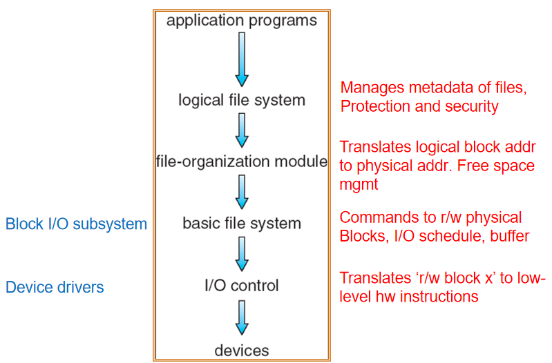
I/O层上有设备驱动程序以及设备终端程序，主要用于将用户抽象出来的指令转化成设备层可以实现的具体操作。
basic file sysytem用于将具体的文件操作转化成对应的物理块的读写等命令，需要实现I/O的调度以及buffer的管理。
分层可以实现更好的模块化，更好的实现功能的封装，从而降低用户使用的难度(下层结构对用户透明)
FTL(Flash Translation Layer)负责坏块管理，读写均衡，在file-organization层面实现
文件系统实现
数据结构
- 磁盘结构
- 引导控制块Boot control block(每卷)：用于启动操作系统的结构，通常放在磁盘的第一个扇区中
- 每个卷的卷控制块Volume control block(Unix中的超级块)：存储每个卷的metadata(卷的大小、卷中的目录项的位置等信息)
- 每个文件系统的目录结构：也是维护在卷控制块中的
- 每个文件FCB(Unix中的inode)：大概128或者256字节的记录(除了文件名之外的和文件相关的属性[文件大小、位于物理存储中的位置、控制权限等])
- 内存结构
- 每个挂载卷的内存中挂载表：每次操作系统启动的时候都可能需要重新挂载
- 目录缓存：降低每次重新load时的开销(Linux中叫dentry)，提高用户使用体感
- 系统范围的打开文件表(包含重要信息打开文件的进程数count)
- 每个进程打开文件表
一个典型的FCB
存储文件的相关控制信息
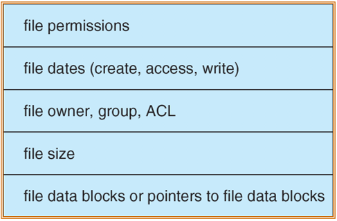
文件的打开与读操作
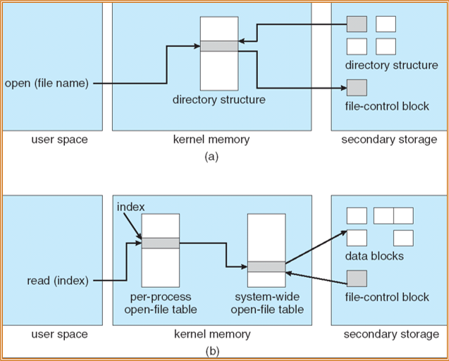
打开文件的时候，可能会有一个目录cache来加速操作。如果此时系统层面的打开文件表已经有了对应的文件，那么此时的用户打开文件表可以直接指向系统层面的打开文件表中的对应内容。打开文件后系统会给用户返回一个文件标识符。
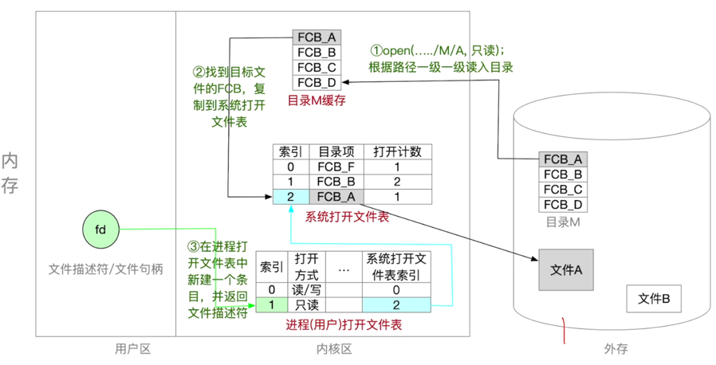
用户在实际对文件进行读写操作的时候，是通过文件描述符(文件句柄)来操作的。
外存中同时存在文件和目录，但是内存中只会存在目录
虚拟文件系统
- 虚拟文件系统(VFS)提供了一种面向对象的实现文件系统的方法。
- VFS允许将相同的系统调用接口(API)用于不同类型的文件系统。
- API是针对VFS接口的，而不是针对任何特定类型的文件系统。
- 定义一个称为vnode的网络范围唯一结构。
整体实现
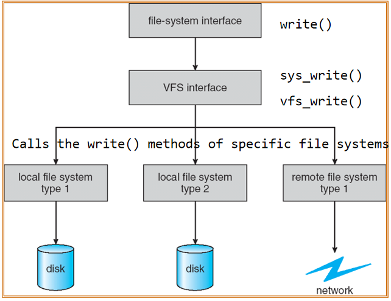
主要就是封装实现，然后将封装后的函数提供给更上层，此时无论底层的实现方式是怎样的，对于上层来说都是一样的，上层调用的是下层自己实现的统一的接口。
VFS的对象
VFS的四种主要对象类型：
- superblock对象：一个特定的挂载文件系统，对应于(但不等于)磁盘结构中的超级块
- inode对象：一个特定的文件，对应于(但不等于)磁盘结构中的FCB
- dentry对象(目录缓存)：一个单独的目录条目
- file对象：与进程关联的打开的文件，只要文件被打开就存在
目录实现
目录本质上是inode或者FCB的有序组合。
- 带有指向数据块指针的文件名线性列表：编程简单但是执行(遍历、搜索等)时间长
- 哈希表(对文件名的哈希)：具有哈希数据结构的线性列表
- 减少目录搜索时间
- 碰撞：两个文件名哈希到同一位置的情况
- 固定大小：可以使用链溢出哈希表或者重新哈希到另一个更大的哈希表
除了上述的这些内容之外，还能够通过文件访问的热点图来实现多级缓存，加快文件访问的效率
分配方式(重点)
Contiguous allocation
每一个文件使用磁盘中的连续的块，这样使用起来比较简单，因为只需要知道起始位置(块号)和长度(块数量)就可以了，但是这种情况下会造成空间的浪费，并且不方便文件的拓展(需要磁盘空间的回收与重新分配)。
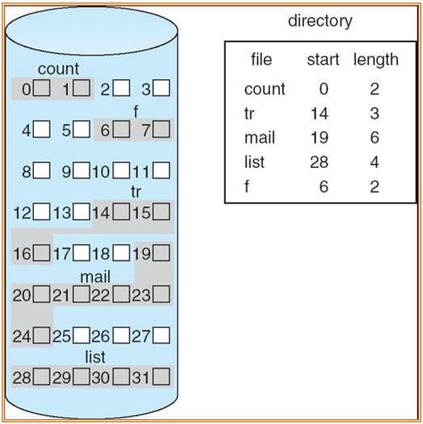
用户使用时的计算方式：
- 访问的块号 = 起始块号 + 文件内部的块号(逻辑地址 / 块的大小)
- 偏移量 = 逻辑地址 % 块的大小
也就是说这种分配方式下支持随机访问
Extent-Based Systems
一种新的连续分配方式，文件分配是以extent为单位进行分配的，在每一个extent内部，文件是连续的，此时如果文件需要拓展并且原来的extent内部的空间不够用了，可以分配一个新的extent给这个文件，并且链接到以前的extent的后面来实现。
Linked allocation
每一个块的内部都包含一个指针，指向这个文件的下一个块，此时空间的分配可以是不连续的，此时问价的拓展，也就是新块的添加只需要分配一个新的块，然后修改链接指向即可。
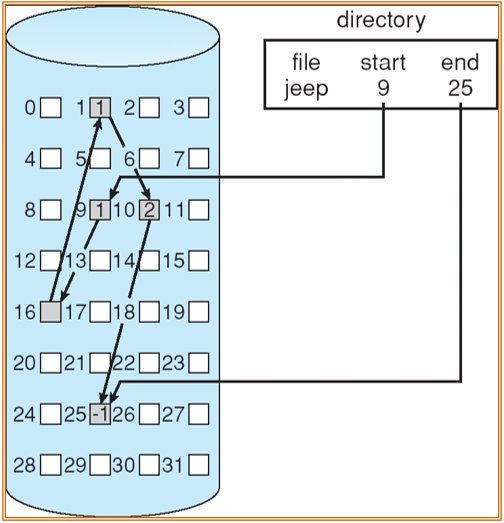
用户使用时的计算方式：
- 访问的块号 = 起始块号 + 文件内部的块号(逻辑地址 / (块的大小 - 1))
- 偏移量 = 逻辑地址 % (块的大小 - 1) + 1
- 指针的大小为1
计算的方式和连续分配是相似的，但是访问需要从链表头开始一个一个访问，需要大量的磁盘I/O
但是这种方案的可靠性是较低的，因为只要一个块坏了，那么这个文件就基本访问不了了
一种改进方式FAT
一种显示的链接方式
在内存中建立特殊的数据结构来维护文件在磁盘中的信息，这样在访问的时候可以现在内存中进行操作，这样速度会比直接在磁盘中快很多
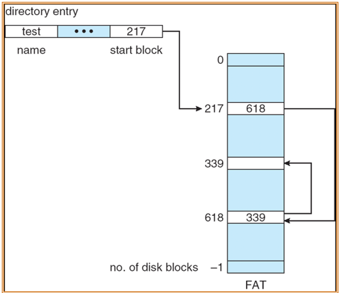
但是如果此时文件的目录结构较大，那么占用的内存的空间会较大。而且此时FAT表需要持久化，那么系统每次启动时都需要从磁盘加载到内存中，而且需要冗余的备份来防止一个FAT出错的情况
Indexed allocation
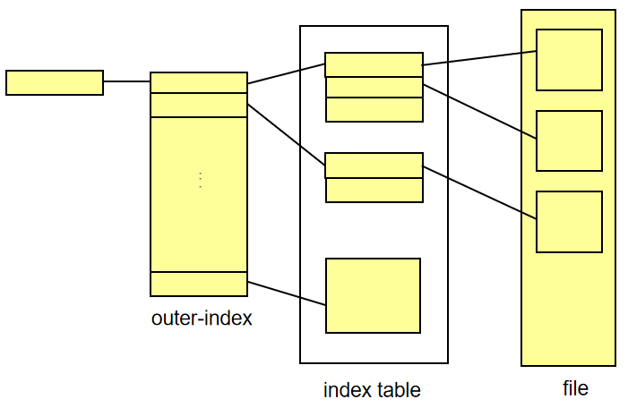
将一个文件的所有指针统一存储到index block中，这样访问文件的时候先访问index blocck来获取具体的磁盘位置信息，再进一步访问磁盘获取文件信息
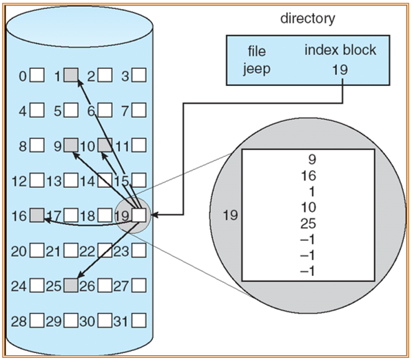
19号块中存储的是整个文件的指针信息
优势：支持随机访问，并且不会出现文件碎片的问题(文件拓展的时候只需要对index block进行插入或者修改即可)
对于一个长度为256K的文件，如果块的大小为512 words，那么只需要一个块就可以存储所有的指针信息。但是如果文件非常大，那么一个index block可能就无法存储所有的指针信息，那么此时就需要多个index block来存储指针信息，此时每个index block之间就需要通过指针进行连接。除了这种方式之外，也可以对index table再建立index table，这样也就可以建立多级表了。
链接表方式
用户访问
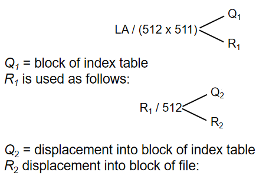
一个栗子
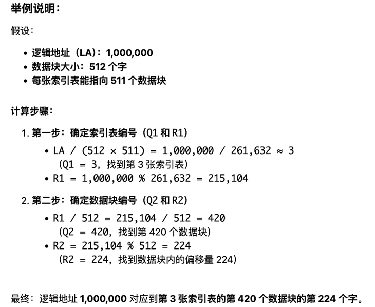
两级索引方式
用户访问
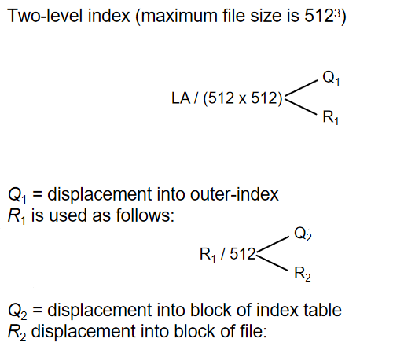
一个栗子
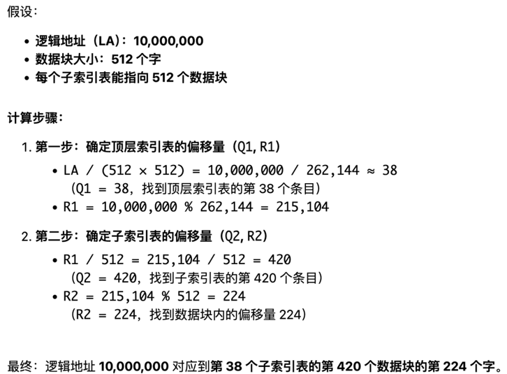
缺点：如果文件较小，那么使用二级索引就会造成较大的浪费
链接表和两级索引的比较
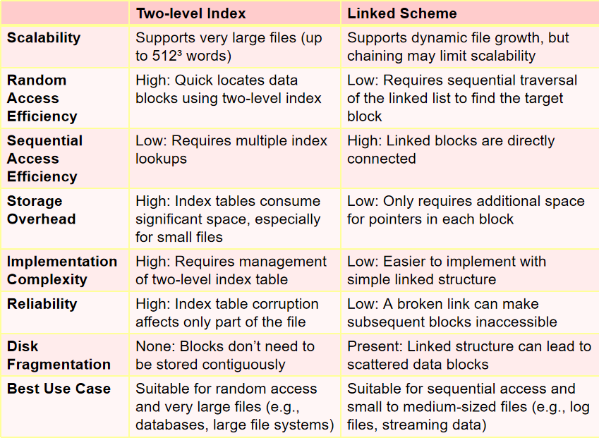
Combined Scheme
混合使用索引方式
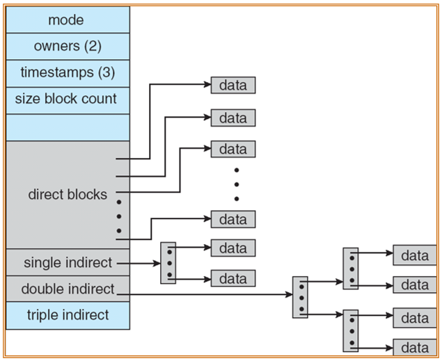
三种分配方式总结
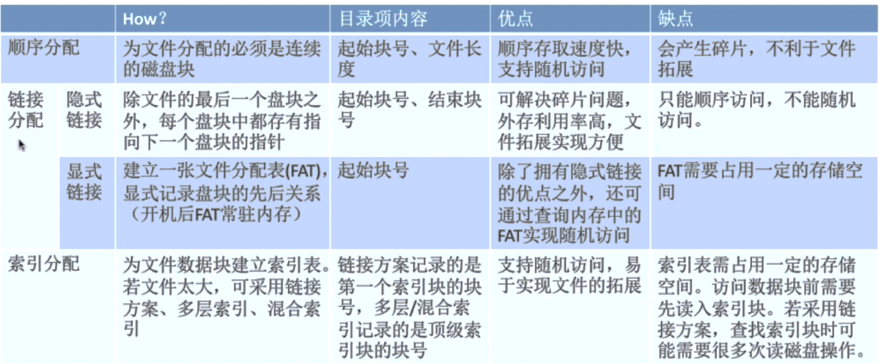
空闲空间管理(重点)
Bit vector 位视图法
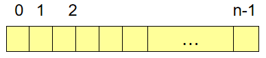
bit[i] 为1，表示 block[i] 是空闲的；bit[i] 为0，表示 block[i] 已经被占用了。
空闲块的物理位置的确定：(number of bits per word) * (number of 0-value words) + offset of first 1 bit
bit map存储在超级块中
Bit map需要额外的空间占用
如果块的大小是 \(2^{12}\) bytes，磁盘的大小为 \(2^{30}\) bytes，所以 bit map 的大小为 \(2^{30}/2^{12}=2^{18}\) bits
一些分配方式
- Linked list：不容易分配连续的空间，但是通常是能够工作的(FAT)，并且不会造成空间的浪费
- Grouping - a modifiacation of the Linked list：这 n 个块的地址存储在第一个块中。通常来说，一个块中指向的前 n-1 个块确实是空闲的，而最后一个块一般包含另外一组块的地址。
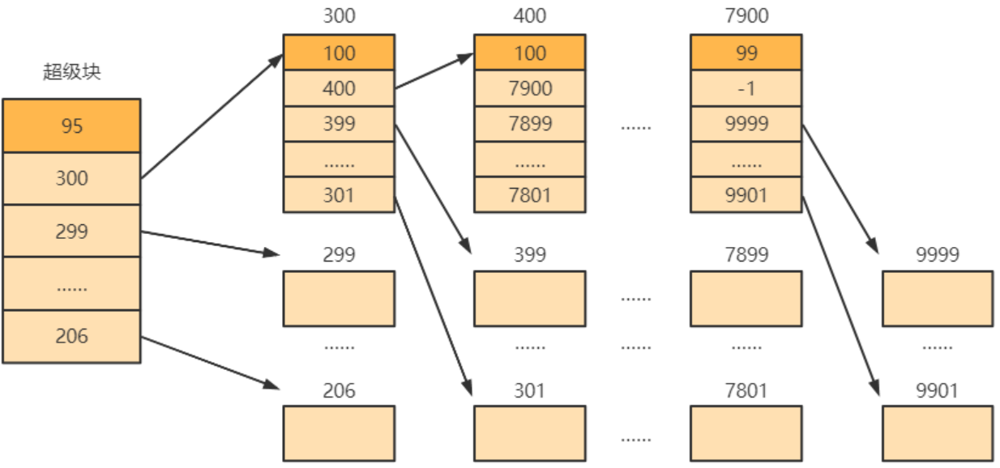 - Counting：第一个空闲块的地址以及连续块的数目(记录的是第一个空闲块的地址以及连续的空闲块的个数)，比较适合管理连续空间的情况
Linked Free Space List on Disk
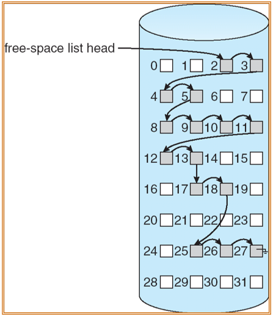
- 优点：空闲块的分配与回收比较方便，并且不容易导致空间的浪费
- 缺点：难以实现分配连续的块
需要维护空闲链表的头指针，并且需要保证内存和磁盘中的 bit map 保持一致(先更新硬盘中的信息，再更新内存中的更新)
不能先更新内存中的信息，否则如果发生了crash，就可能导致数据的不一致性
效率与表现
- Efficiency
- 效率取决于磁盘空间分配算法以及目录算法
- 同时也会被保存在文件目录条目中的数据类型影响
- Performance
- 磁盘缓存(disk cache) - 主存储器中用于经常使用的块的独立部分
- 后释放和预读取(free-behind and read-ahead) - 优化顺序访问的技术
- 通过将部分内存用作虚拟磁盘或RAM磁盘来提高PC性能
Page Cache
- 页缓存缓存虚拟内存页而不是磁盘块实际页面
- 内存映射I/O使用page cache
- 通过文件系统的例程I/O使用缓冲区(磁盘)缓存
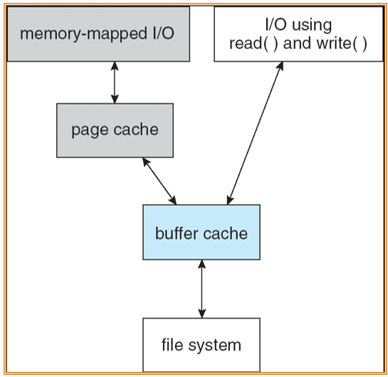
page cache作为一个中间层，既可以就收buffer cache的数据，也可以向buffer cache传输数据
Unified Buffer Cache 统一缓冲缓存
统一缓冲缓存使用相同的页面缓存来缓存内存映射的页面和文件系统I/O，从而避免双重缓存。
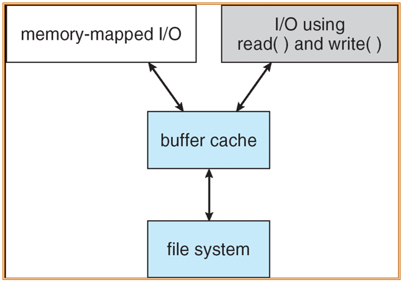
NFS架构示意图
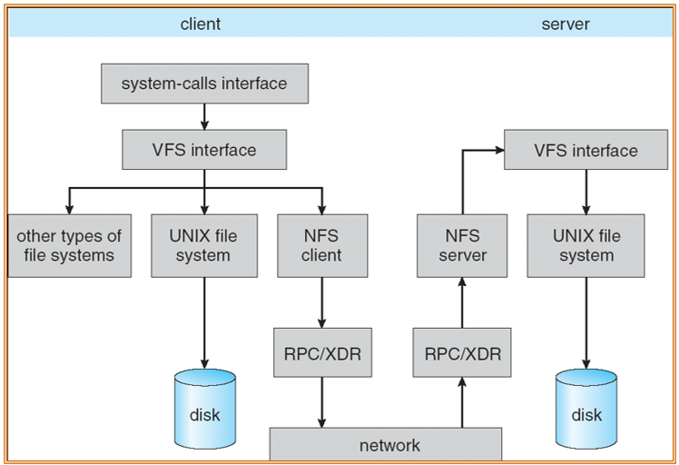